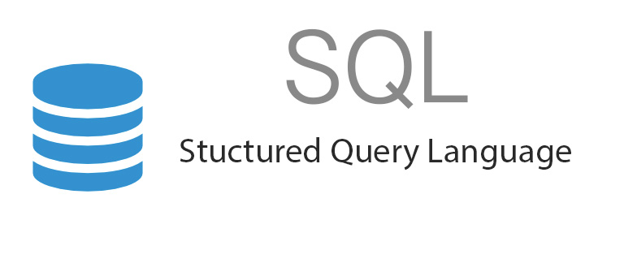
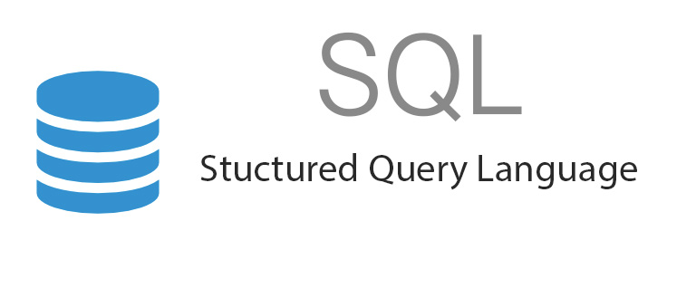

Internship Experience
AI Master Class, Pantech Solutions Pvt Ltd (Pantech ProLabs India) · Apprenticeship
Oct 2020 - Nov 2020
A 30-day internship where I gained experience in applying AI to real-world applications. During the internship, I was taught a variety of AI techniques, including OpenCV for face recognition, emotion recognition, object detection and tracking, as well as NLP for speech recognition and emotion recognition. I also gained experience in deep learning techniques such as plant disease classification and drowsiness detection, as well as game development using AI techniques in a project such as AI Snake Game. Additionally, I learned about cloud-based AI and AI in hardware.
Over the course of the internship, I successfully deployed more than 25 real-time codes/applications and gained hands-on experience with the latest AI technologies.
Skills :
TensorFlow · TensorBoard · Data Science · Machine Learning · Matplotlib · NumPy · Seaborn
Research Intern, Bayes Labs
Jun 2020 - Oct 2020
I have worked across multiple areas in drug discovery and machine learning, with a particular focus on collecting data sources in chemistry and genomics, leveraging this data to generate new molecules with desired properties, and building machine learning-based libraries to accelerate all phases of drug discovery and development. Additionally, I have worked on understanding the backend processes of advanced protein structure prediction algorithms and implementing them.
Through my work, I have gained extensive experience in data collection, machine learning, and drug discovery. I am passionate about leveraging the latest technologies to drive innovation in the field of drug discovery and am constantly seeking new opportunities to deepen my knowledge and skills.
Skills :
Data Science · Machine Learning · Matplotlib · NumPy · Bioinformatics · Python (Programming Language)
Student Intern, Internship Studio
Jul 2020 - Aug 2020
Excel automation with the title "Retail Sales record compilation
Skills :
Intern, shodhaka life sciences
Jun 2019 - Aug 2019
Compilation and comparative studies on gene expression and regulation in spermatogenesis and male infertility
Skills :
Python (Programming Language) · NGS data analysis


 
